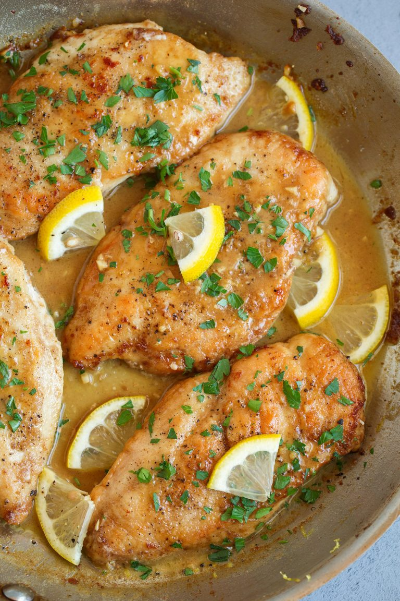

Home
Lemon Chicken

Description
A perfect twist to an old favorite.
Serves 4
Prep: 10 minutes
Cook: 30-40 minutes
Total: 40-50 minutes
Ingredients
- 1/4 cup olive oil
- 3 tbsp minced garlic
- dry white wine
- 1 tbsp grated lemon zest
- 2 tbsp lemon juice
- 1 1/2 tsp oregano
- 1 tsp thyme
- salt and pepper to taste
- 4 boneless chicken breasts(6-8oz)
- 1 lemon
- 1 small onion
Directions
- Preheat oven to 400 degrees F.
- Warm olive oil in a small saucepan over medium-low heat, add garlic and onion, and cook for just 1 minute but don't allow the garlic/onion to brown.
- Off heat. Add white wine, lemon zest, lemon juice, oregano, thyme, salt, and pour into 9x12 baking dish.
- Pat breasts dry and place over sauce. Brush with olive oil and sprinkle with salt and pepper. Cut lemon into 8 wedges and tuck it among the pieces of chicken.
- Bake for 30-40 minutes, depending on size of chicken breasts, until it is done and lightly browned. Cover tightly with aluminum foil and allow to rest for 10 minutes. Serve with pan juices.